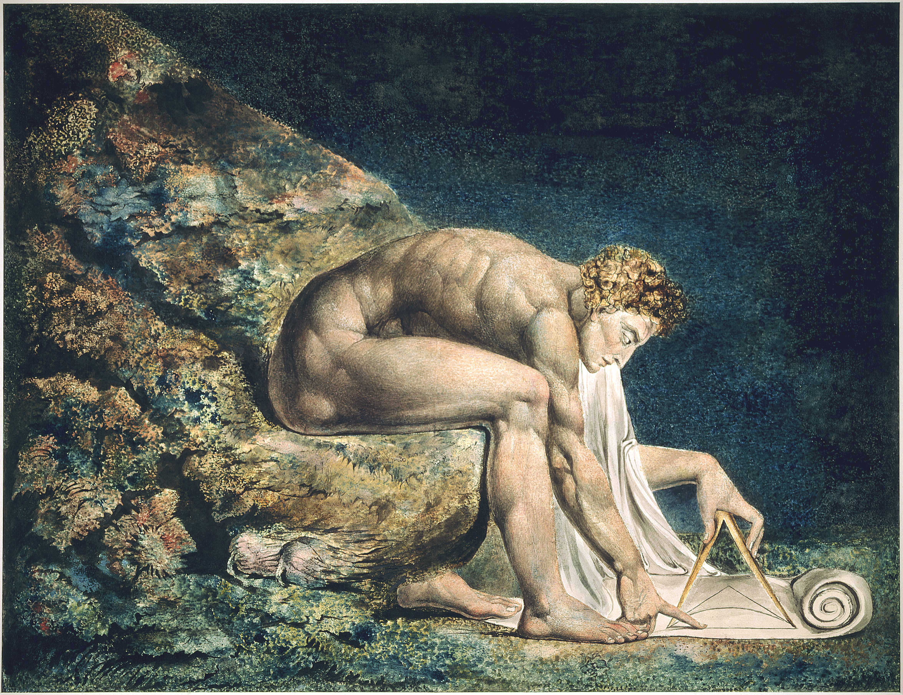

Initium
Welcome to Ratio Res. This journal is crafted from exploration and enquiry. Here, the reader will find passages, essays and extracts that mirror the breadth of my interests and experiences.
This journal is intended to serve:
- A repository for all my writings that span a variety of subjects – History, Law, Art Theory and more.
- A record of my insights, experiences and learning.
- A forum for sharing ideas and exploring abiding themes.